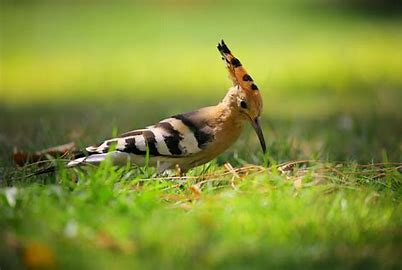
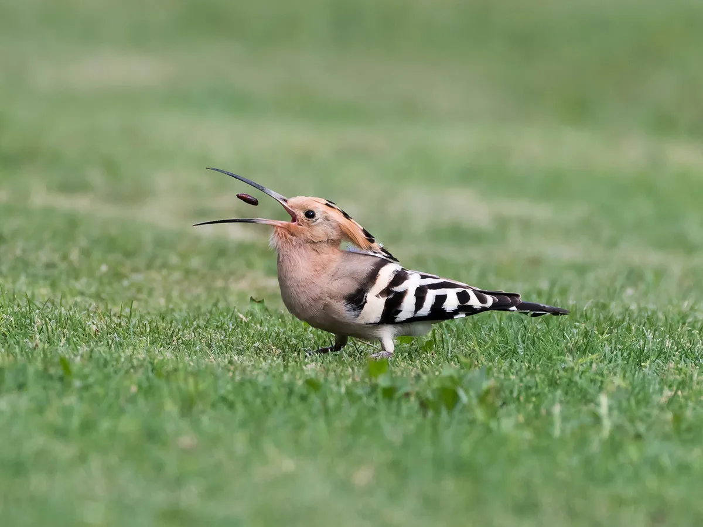

Hoopoes are distinctive birds known for their striking appearance, featuring a unique
fan-like crest, black and white wing patterns, and a long, curved bill.
Habitat

Hoopoes can be found in open landscapes such as savannas, grasslands, orchards, and
farmlands across Europe, Asia, and Africa.
Diet

Hoopoes primarily feed on insects such as beetles, grasshoppers, and ants, as well as
small invertebrates.
Behavior
Hoopoes exhibit unique behaviors such as foraging for food by probing the ground with
their long bills and creating distinctive calls.
Adaptations
Hoopoes have developed adaptations such as their long, curved bills for probing the
ground for food and their fan-like crest for signaling and attracting mates.
Conservation Status
Hoopoes are currently listed as "Least Concern" in terms of conservation status, but
habitat loss and hunting in some regions pose potential threats.
Cultural Significance
Hoopoes hold cultural significance in various traditions, including their mention in
ancient literature and as a symbol of wisdom in some cultures.
Interesting Facts
- Hoopoes are known for their beautiful, fan-like crests and unique calls.
- They are territorial birds and will defend their nests from intruders.
- Hoopoes have been mentioned in various ancient texts and art pieces.
Research and Studies
Sensory Adaptations
Vision: Hoopoes have large, expressive eyes that give them excellent visual acuity. This helps them spot prey and detect predators while foraging on the ground.
Hearing: Though not as advanced as owls, hoopoes have a good sense of hearing, aiding them in locating insects underground or beneath leaves and debris.
Flight and Behavior
Hoopoes have broad, rounded wings that enable agile and direct flight, useful for maneuvering through trees and shrubs. Their distinctive flight pattern alternates between flapping and gliding.
Known for their unique "up-and-down" flight style, hoopoes also have a distinctive call, a soft, repetitive "hoo-poo" sound, from which they get their name.
Ecology and Behavior
Diet: Hoopoes primarily feed on insects and other small invertebrates such as beetles, caterpillars, and earthworms. They use their long, curved bills to probe the ground and leaf litter for prey.
Nesting and Reproduction: Hoopoes nest in tree cavities, abandoned burrows, or other natural crevices. They lay several eggs per clutch, and the female incubates them while the male brings food.
Conservation and Threats
Habitat Loss: Habitat destruction and changes in land use can affect hoopoe populations, as they rely on specific habitats such as open woodlands and savannas.
Pesticides and Pollution: Pesticide use can impact hoopoe populations through direct exposure or by reducing their food sources.
Conservation Efforts: Protecting natural habitats and minimizing pesticide use are important measures to conserve hoopoe populations.